9/12（土）16:30〜20:30｜出店補助（ドリンク販売・射的・輪投げ等）
9/13（日）16:00〜22:00頃｜出店補助・お祭り終了後の会場撤収
🎉 9/13（日）本宮 開催報告
川島囃子から盆踊りまで大盛況！
川島囃子から盆踊りまで大盛況！
本宮を写真で振り返ります
9月13日（日）の本宮は、川島囃子からスタート。漫才は大爆笑、バンド、バトン、空手、タップダンス、川島ソーラン、Exitium Of NemesisのHEAVY METAL、第四役員スリラーダンスまで盛りだくさんの演芸となり、最後は盆踊りで締めくくりました。ご出演・ご来場・ご協力いただいた皆さま、本当にありがとうございました。
9/14更新：13日本宮の開催報告と写真を追加しました。当日の演目の流れに沿って、会場の様子をご紹介します。
9/13 本宮開催報告
ご来場ありがとうございました！
夏祭り
大盛況！
本宮は無事終了しました
会場：川島町水道みち公園
駐車場：東電置場が利用可能
9/12（土）宵宮：大盛況で終了
9/13（日）本宮：川島囃子 16:40〜16:55／演芸 17:00〜20:30
漫才・バンド・バトン・空手・タップダンスなど多彩な演目
川島ソーラン・Exitium Of Nemesis・スリラーダンス・盆踊りまで大盛況！
地域ゆかりの出演者紹介
Exitium Of Nemesis
第四町内会にゆかりのあるメンバーが活動している、神奈川県発のバンドです。2023年11月に結成され、神奈川県内を中心にライブ活動を重ねています。
9月13日（日）の本宮では18:50頃から出演し、HEAVY METALで会場を一気に熱くしてくれました。近況として、フジテレビ系のバラエティ番組「新しいカギ」への出演、台湾ツアーからの帰国、今後の中国地方ツアー予定なども届いています。地域の夏祭りで、若い世代の本格的なバンド演奏をぜひお楽しみください。
第四町内会ゆかり
神奈川県発バンド
9/13（日）本宮出演
「新しいカギ」出演
台湾ツアー実施
公式音源・動画あり
9月13日（日）の本宮では、迫力あるHEAVY METALのステージで会場を大いに盛り上げていただきました。地域の夏祭りに本格的なライブの熱気を届けてくださり、ありがとうございました。
REPORT / 9.13 HONGU
川島囃子から始まり、スリラーダンスと盆踊りでフィナーレ！
13日の本宮は、川島囃子の音色とともにスタートしました。演芸では、漫才で会場が大爆笑。バンド、teamBAT! de show!のバトン、極真空手演舞、タップダンス、川島ソーランと続き、18:50頃にはExitium Of NemesisがHEAVY METALで会場を沸かせました。19:10頃からは第四役員のスリラーダンス、そして最後は盆踊り。まさに盛りだくさんの本宮となりました。
13日（日）本宮・演芸ダイジェスト
川島囃子お囃子の音色で本宮がスタート。祭りの空気を一気に高めていただきました。
バンド演奏若い出演者によるバンド演奏で、演芸ステージが勢いよく始まりました。
teamBAT! de show!14名による華やかなバトンパフォーマンス。会場から大きな拍手が送られました。
弾き語りNØNさんによる弾き語り。落ち着いた歌声で会場を魅了しました。
極真空手演舞迫力ある演武と試割りに、会場の視線が釘付けになりました。
タップダンス安里大志さんのグループの方によるタップダンス。軽快なリズムで会場を盛り上げていただきました。
漫才会場は大爆笑！ 笑い声が響き渡る楽しいステージとなりました。
川島ソーラン第四の子どもたち＆大人たちが力強く踊り、会場が一つになりました。
Exitium Of NemesisHEAVY METALの熱いライブ！ 本宮ステージの熱気を一段と高めてくれました。
第四役員 スリラーダンス仮装した第四役員が登場。会場の皆さんと一緒に大いに盛り上がりました。
盆踊り子どもから大人まで輪になって踊り、本宮の最後をにぎやかに締めくくりました。
ご出演・ご協力に、心から感謝します。
出演者の皆さま、音響・進行を支えてくださった皆さま、ボランティア・役員の皆さま、そして会場を盛り上げてくださったご来場の皆さま。本当にありがとうございました。
13日本宮フォトレポート
本宮当日の様子を写真で振り返ります。川島囃子から始まった演芸は、笑い・音楽・ダンス・武道・ソーラン・HEAVY METALと盛りだくさん。最後はスリラーダンスと盆踊りで締めくくりました。
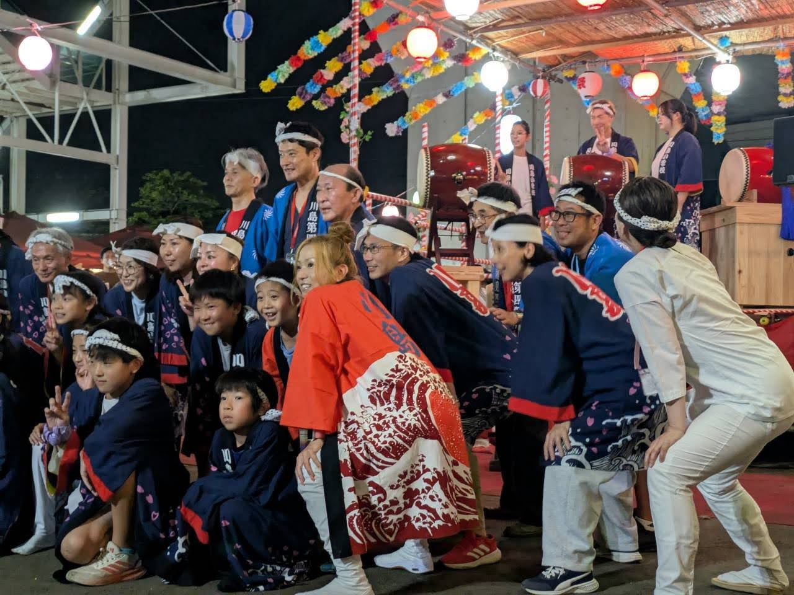
本宮は川島囃子からスタート。太鼓とお囃子の音色が会場に響き、お祭りの空気が一気に高まりました。
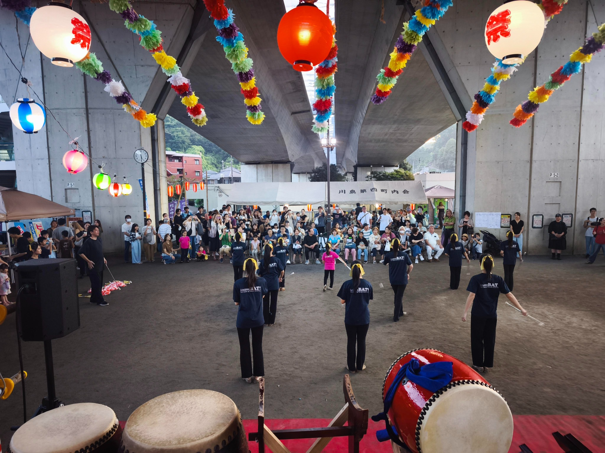
14名によるバトンパフォーマンス。広い会場いっぱいを使った華やかな演技でした。
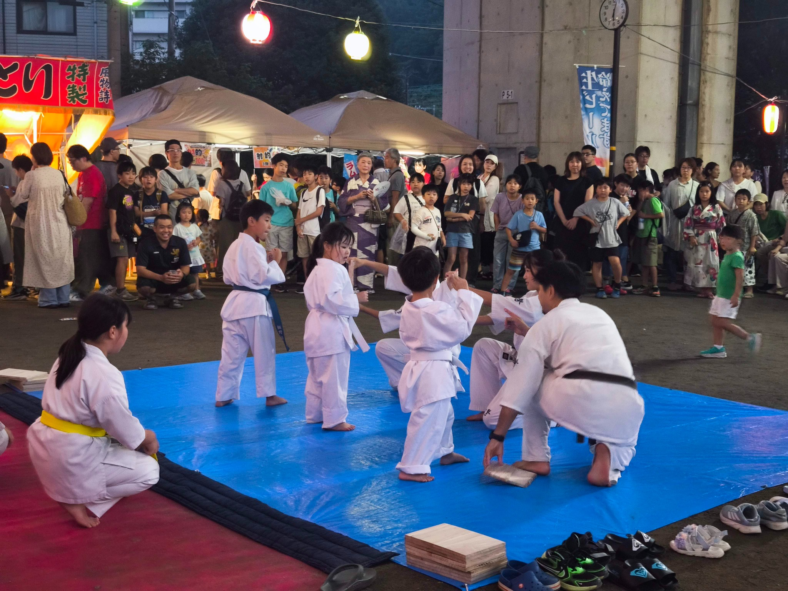
迫力ある演武と試割りを披露。子どもたちの真剣な姿にも大きな拍手が送られました。
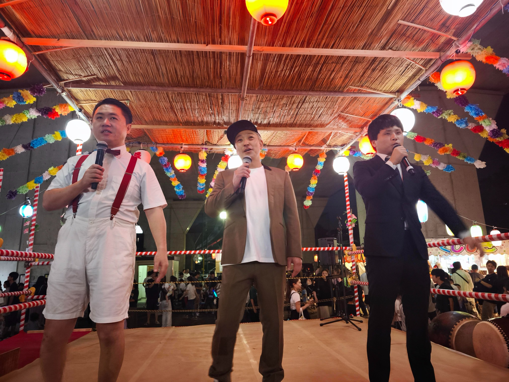
会場は大爆笑！ テンポの良いやり取りに、ステージ前からたくさんの笑い声が上がりました。
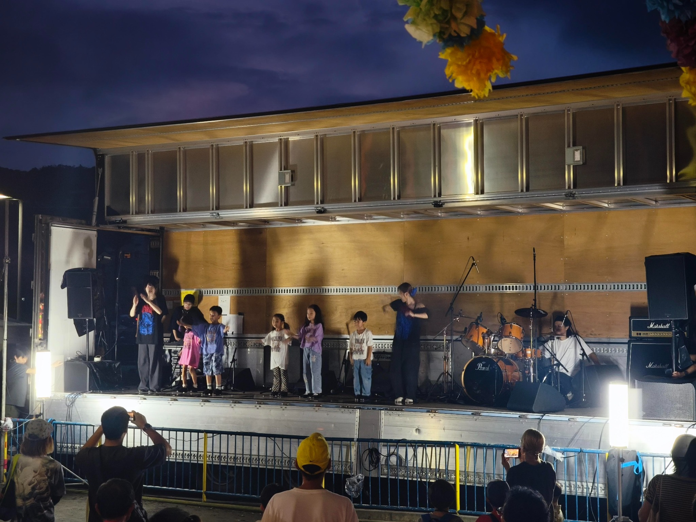
バンドや各種パフォーマンスなど、多彩な出演者が本宮を盛り上げてくださいました。
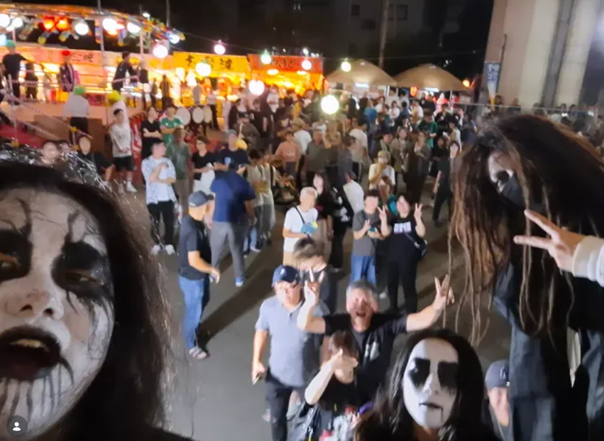
18:50頃からHEAVY METALで登場。迫力あるライブで本宮の夜をさらに熱くしてくれました。
写真：Vo/Gt Haruki（郡司くん）Instagram @haruki_e_o_n よりお借りしています。
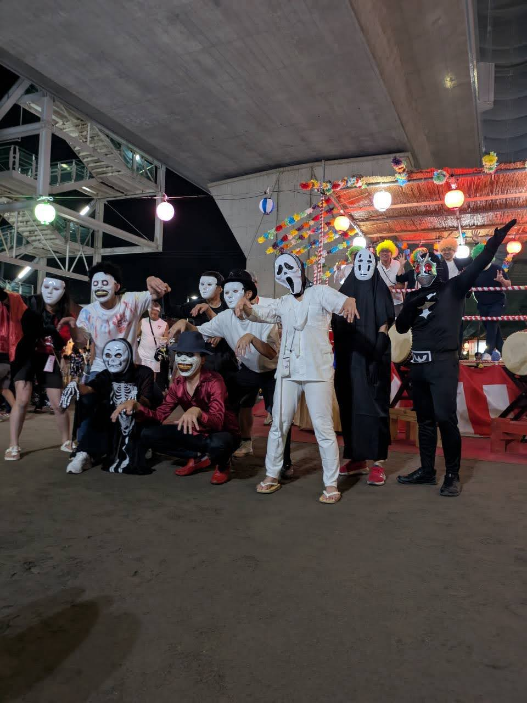
仮装した第四役員が登場！ ステージ前も大いに盛り上がり、楽しいフィナーレへつながりました。
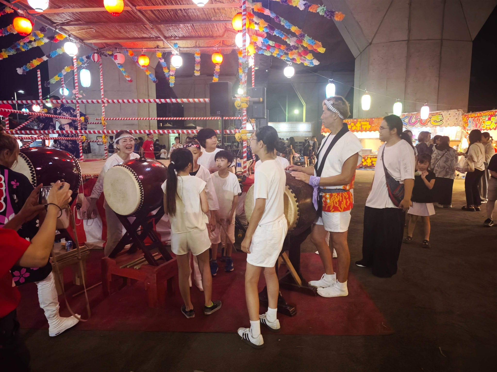
演芸の合間も、太鼓のまわりにはたくさんの笑顔。地域のみんなでつくる夏祭りらしい光景でした。
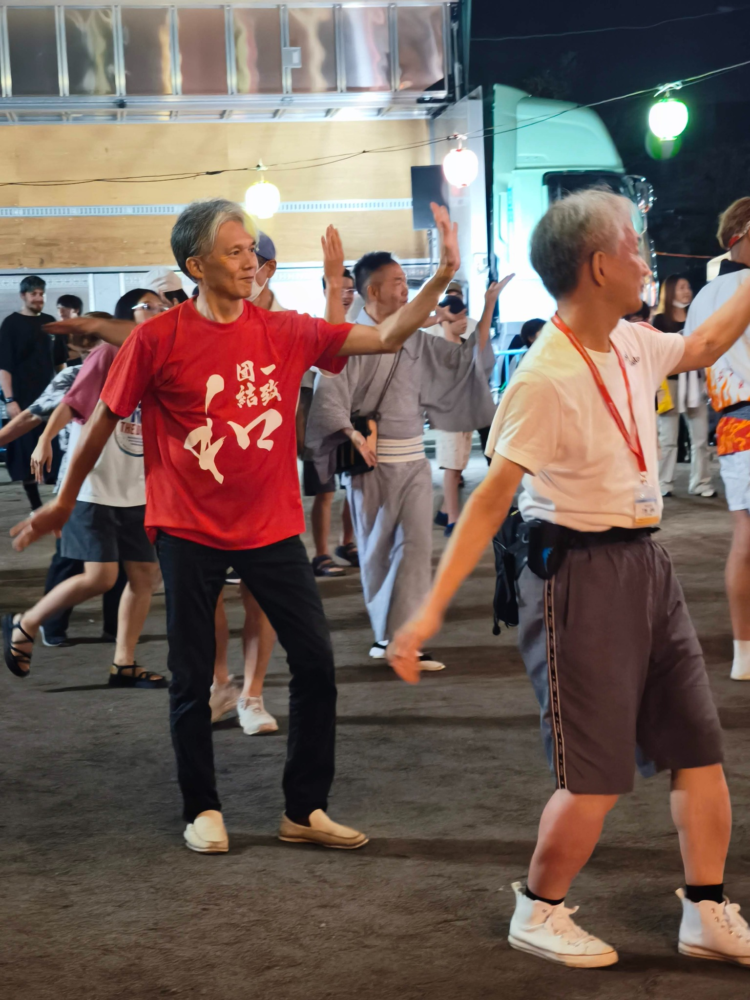
本宮の締めくくりとなった盆踊りを踊る吉村実行委員長。夏祭りの準備・運営の中心として最後まで会場を支えてくださいました。本当にお疲れ様でした！
※掲載写真について、掲載・表記に関するご希望がありましたら町内会までご連絡ください。
宵宮からお祭りは大盛り上がり！
初日から多くの方にご来場いただき、演奏、ダンス、ステージ企画などで会場は熱気いっぱいとなりました。本宮も、地域のみなさんと一緒にさらに盛り上げていきます。
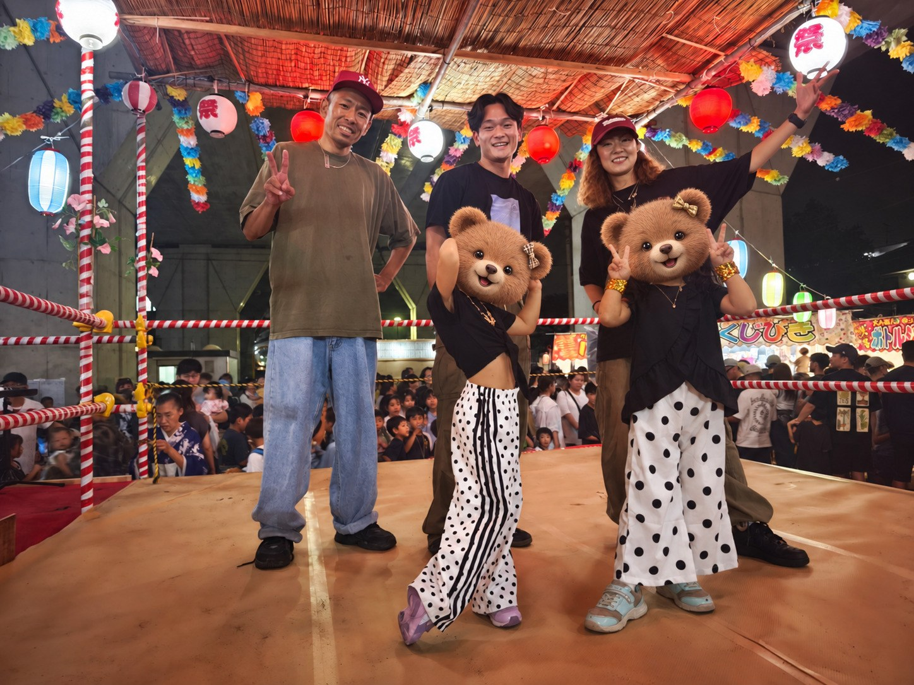
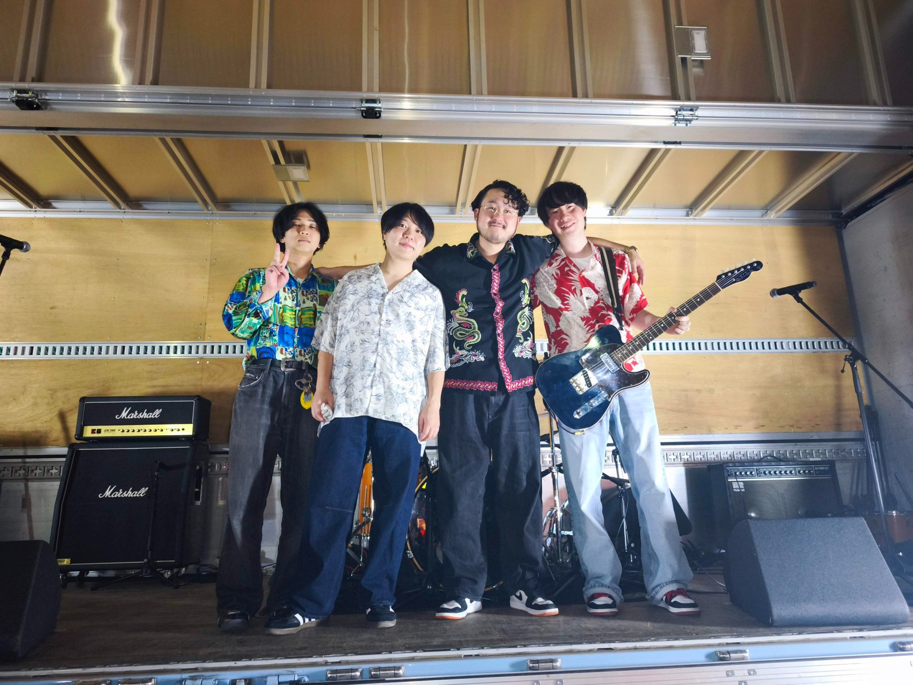
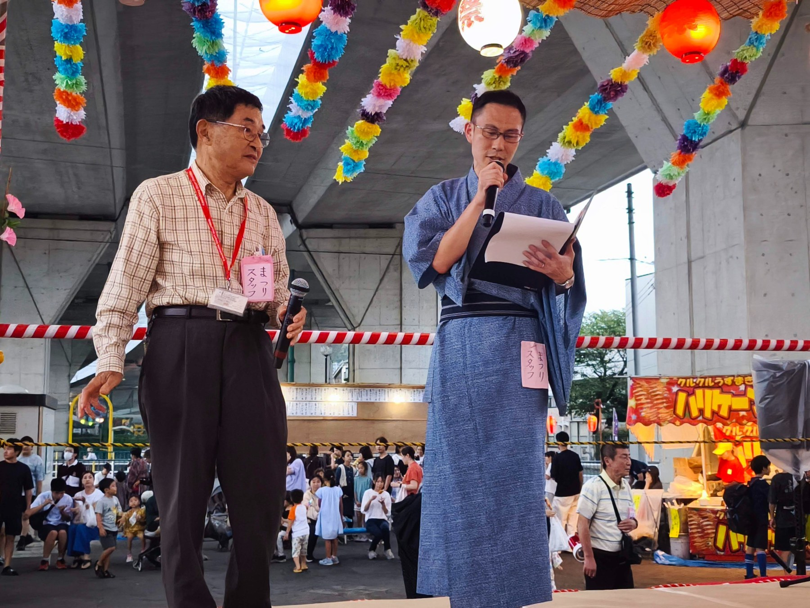
※掲載写真に写るお子さんの顔については、プライバシー保護のため一部加工しています。
夏祭りを支えてくださったボランティアの皆さまへ
夏祭りの準備から宵宮・本宮、そして後片づけまで、多くの皆さまに力を貸していただきました。本当にありがとうございます。ここでは、ボランティア応募時にお申し込みいただいた日程・対応内容とともに、感謝を込めてお名前を紹介します。
9/12（土）16:30〜20:30｜出店補助（ドリンク販売・射的・輪投げ等）
9/13（日）16:00〜22:00頃｜出店補助・お祭り終了後の会場撤収
9/6（日）9:00〜15:00｜のぼり旗の設置・やぐらの飾り付け等
9/12（土）9:00〜14:30｜お神輿の組み立て・飾り付け等
9/12（土）16:30〜20:30｜出店補助（ドリンク販売・射的・輪投げ等）
9/13（日）9:40〜13:30｜お神輿巡行・お神輿解体・山車解体等
9/13（日）16:00〜22:00頃｜出店補助・お祭り終了後の会場撤収
9/12（土）16:30〜20:30｜出店補助（ドリンク販売・射的・輪投げ等）
9/13（日）16:00〜22:00頃｜出店補助・お祭り終了後の会場撤収
9/12（土）9:00〜14:30｜お神輿の組み立て・飾り付け等
9/12（土）16:30〜20:30｜出店補助（ドリンク販売・射的・輪投げ等）
9/13（日）9:40〜13:30｜お神輿巡行・お神輿解体・山車解体等
9/13（日）16:00〜22:00頃｜出店補助・お祭り終了後の会場撤収
9/12（土）16:30〜20:30｜出店補助（ドリンク販売・射的・輪投げ等）
9/6（日）9:00〜15:00｜のぼり旗の設置・やぐらの飾り付け等
9/12（土）9:00〜14:30｜お神輿の組み立て・飾り付け等
9/12（土）9:00〜14:30｜お神輿の組み立て・飾り付け等
9/12（土）16:30〜20:30｜出店補助（ドリンク販売・射的・輪投げ等）
9/12（土）9:00〜14:30｜お神輿の組み立て・飾り付け等
9/12（土）16:30〜20:30｜出店補助（ドリンク販売・射的・輪投げ等）
9/13（日）16:00〜22:00頃｜出店補助・お祭り終了後の会場撤収
9/13（日）16:00〜22:00頃｜出店補助・お祭り終了後の会場撤収
夏祭りの準備等にご協力いただきました。
※9/20（日）に予定していた撤収作業は、すべての撤収作業が完了したため中止となりました。
※9/20（日）に予定していた撤収作業は、すべての撤収作業が完了したため中止となりました。
THANK YOU FOR SUPPORTING KAWASHIMA DAI-4 SUMMER FESTIVAL!
※お名前は応募時の氏名をもとにローマ字表記しています。表記の訂正・ご希望がある場合は町内会までお知らせください。
※お名前は応募時の氏名をもとにローマ字表記しています。表記の訂正・ご希望がある場合は町内会までお知らせください。
夏祭りの記録と振り返り
NEW
更新日：2026年9月14日
Vol.4 13日本宮も大盛況！ 2026年夏祭りが無事終了しました
9月12日の宵宮、13日の本宮ともに、多くの皆さまのご協力により無事に終了しました。13日の本宮では、川島囃子、漫才、バンド、バトン、空手、タップダンス、川島ソーラン、HEAVY METAL、スリラーダンス、盆踊りと盛りだくさんの一日となりました。
本宮も大盛況
13日の本宮は、川島囃子、漫才、バンド、バトン、空手、タップダンス、川島ソーラン、Exitium Of Nemesis、第四役員スリラーダンス、盆踊りまで、たくさんの催しで盛り上がりました。
ご協力に感謝
出演者、ボランティア、役員、出店関係者、ご来場の皆さまのお力添えにより、安全で楽しい夏祭りを開催することができました。
地域みんなでつくる夏祭り
出演や運営だけでなく、準備・設営・撤収まで含めて多くの方が関わり、地域でつくる夏祭りらしい温かな行事となりました。
準備段階から当日の様子まで、新井会長のXでも発信しています。あわせてご覧ください。
9/13 本宮開催報告9/13（日）の本宮は無事に終了し、今年の夏祭りを大成功で締めくくることができました。
演芸の皆さま漫才、バンド、バトン、空手、タップダンス、川島ソーランなど、幅広い演目で会場を盛り上げていただきました。ご出演ありがとうございました。
Exitium Of Nemesis地域ゆかりのバンドとして、本宮のステージを熱く盛り上げていただきました。
ボランティアの皆さま出店補助、神輿、設営、撤収など、たくさんのご協力をいただきました。
本宮フォトレポート本ページでは、本宮当日の様子を写真とともにご紹介しています。
来年へつながる夏祭り今年の経験とつながりを大切にしながら、来年も地域みんなで楽しい夏祭りをつくっていきたいと思います。
演芸出演の受付は終了しました
たくさんのご応募ありがとうございました
今年も、音楽バンドや弾き語り、バトン、空手、タップダンス、川島ソーランなど、たくさんの演芸にご出演いただきました。
- 音楽バンド
- 弾き語り
- バトン
- 空手演舞
- 川島ソーラン
- その他楽しい演芸
ご出演ありがとうございました！
演芸に参加してくださった皆さまのおかげで、会場が笑顔と熱気に包まれました。第四町内会にゆかりのある「Exitium Of Nemesis」もHEAVY METALのライブで本宮を大いに盛り上げてくれました。
過去動画で雰囲気を見る
過去の動画で、第四町内会のにぎやかな夏祭りの雰囲気をご覧ください。
よくある質問
2026年夏祭りは終了しました。宵宮・本宮の開催報告や写真をご覧いただけます。
Q. 夏祭りは誰でも参加できますか？
A. 川島第四町内会の皆さまを中心に、地域の方に楽しんでいただける行事として準備しています。
Q. 子どもも参加できますか？
A. はい。太鼓、ソーラン節、神輿など、子どもたちも参加しやすい内容を準備しています。
Q. 本宮当日の様子は見られますか？
A. はい。「13日本宮フォトレポート」で、当日の演芸や会場の様子を写真でご覧いただけます。
会場案内
川島町水道みち公園
会場は、川島町水道みち公園です。
会場案内、通行方法、ごみの分別などは、詳細決定後にお知らせします。
駐車場のご案内
駐車場は、東電置場が利用可能です。
場所・利用時間・誘導方法など、当日の詳しい案内は決まり次第このページでお知らせします。
出演・参加・ご協力について
夏祭りに関するお問い合わせや、当日の運営・会場についてのご連絡は、お問い合わせページからお願いします。